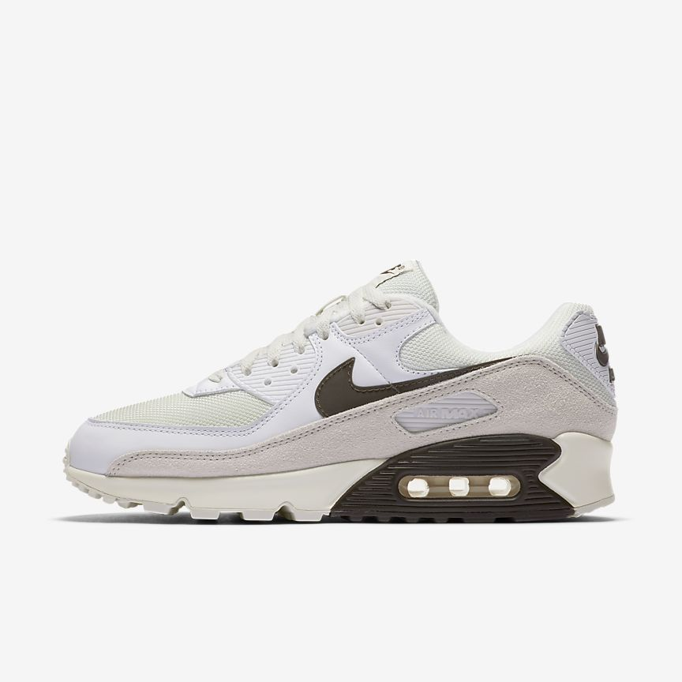
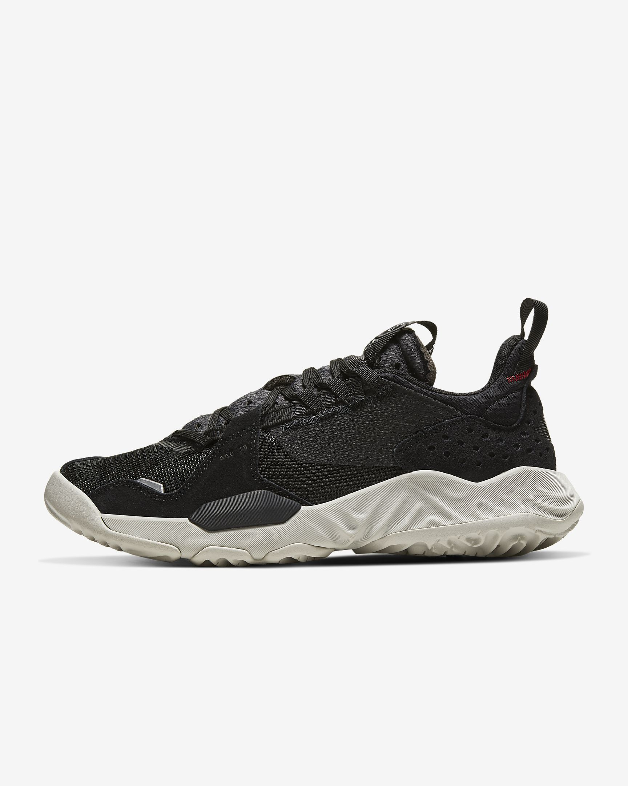
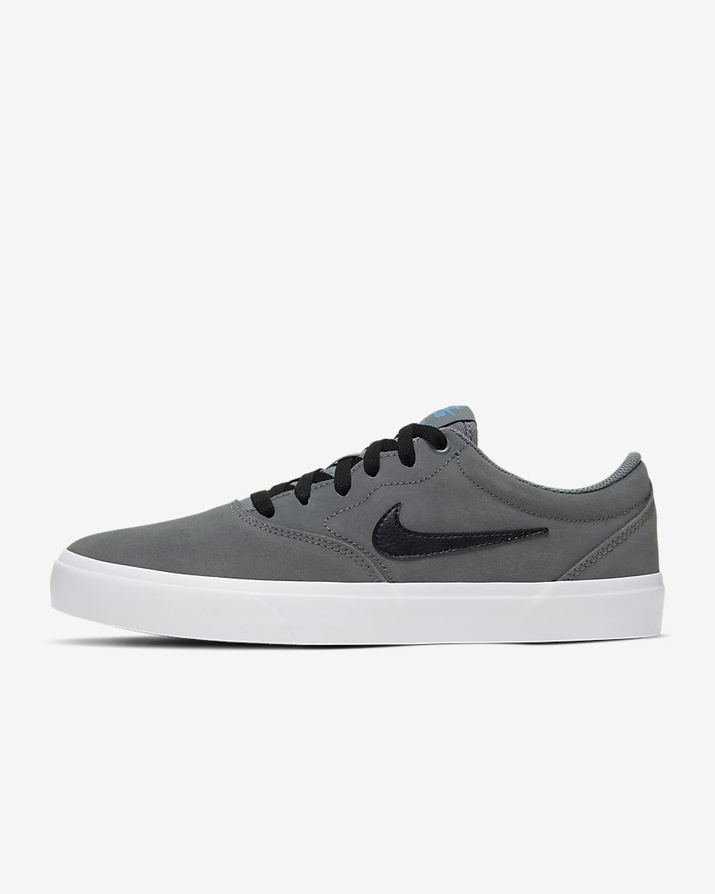

INICIO |
MODA CALLEJERA |
CALZADO |
TENIS NIKE
Nike fabrica una amplia gama de equipamiento deportivo. Sus primeros productos fueron zapatos de pista para correr. En la actualidad también se hacen zapatos, camisetas, pantalones cortos, y demás accesorios, para una amplia gama de deportes, incluyendo atletismo, béisbol, hockey sobre hielo, tenis, fútbol, lacrosse, baloncesto, y el cricket. Nike Air Max, es una línea de zapatos lanzados por primera vez en 1987.
Nike tiene más de 500 lugares en todo el mundo y oficinas en 45 países fuera de Estados Unidos. La mayoría de las fábricas están situadas en Asia, incluyendo Indonesia, China, Taiwán, India, Tailandia, Vietnam, Pakistán, Filipinas, Malasia, y la República de Corea. Nike no se atreve a revelar información sobre el contrato con las empresas que funciona. Sin embargo, debido a las duras críticas por parte de algunas organizaciones como Barbie.com, Nike ha divulgado información sobre su contrato de fábricas en su Informe de Gobierno Corporativo.
|  |
NIKE AIR MAX 90
Puedes adquirirlos aquí Nike Air Max 90 |
|  |
JORDAN DELTA
Puedes adquirirlos aquí Jordan Delta |
|  |
NIKE SB CHARGE
Puedes adquirirlos aquí Nike SB Charge |
VOLVER ARRIBA |